연결에 스며든 사랑
Sarang Within Connection · TEAM 04 이가은 · 임창균 · 조용주
메인 주제
사랑의 깊이는 좋아하는 마음의 크기가 아니라, 서로의 세계가 스며든 넓이다.
관객에게 건네는 질문
"당신 안에는 누구의 모습이 남아 있나요?"
① 콘셉트 기획
전시 개요
사랑의 깊이는 좋아하는 마음의 크기가 아니라, 서로의 세계가 스며든 넓이다. 이 전시는 사랑을 누군가를 향한 감정이 아닌, 서로 다른 세계가 만나 겹치고 스며들며 서로를 바꾸어 가는 과정으로 바라본다. 우리는 누군가와 관계를 맺으며 상대의 일부를 자신의 세계에 받아들이고, 그 과정에서 이전과는 다른 존재가 된다. 작가들은 두 세계의 겹침과 그 사이에서 생겨나는 새로운 흔적을 통해, 사랑이란 서로에게 어떤 변화를 남기는가를 묻는다. 그리고 그 물음을 관객에게 건넨다. "당신 안에는 누구의 모습이 남아 있나요?"
작가는 관계를 완성된 상태가 아니라 계속 진행 중인 과정으로 보고, 그 과정이 남긴 흔적에 주목한다. 두 세계가 만나는 자리에서는 서로의 습관과 언어, 기억이 천천히 스며들어 어느 한쪽의 것도 아닌 새로운 색이 생겨난다. 우리는 타인과 함께하며 서로를 닮아가지만, 동시에 이전에는 몰랐던 자신의 모습과 새로운 가능성을 발견하기도 한다. 작가는 이러한 변화를 단순히 서로 닮아가는 현상이 아니라, 각자의 고유함을 간직한 채 서로의 세계를 넓혀가는 과정으로 바라본다.
우리는 수많은 사람과 연결되어 살아가지만, 그 연결이 자신에게 무엇을 남겼는지는 쉽게 인식하지 못한다. 누군가에게서 배운 말투, 함께하며 생겨난 취향, 무심코 닮아버린 습관처럼 사랑의 흔적은 일상 곳곳에 스며들어 있다. 이 전시는 사랑을 연인 사이의 특별한 감정에 한정하지 않고, 타인과 관계를 맺으며 서로의 일부가 되어가는 보편적인 경험으로 확장한다. 자신의 것이라고 여겼던 취향과 가치관 속에서 타인의 흔적을 발견하고, 우리가 누구와 연결되어 왔는지를 돌아보는 일이 곧 자기 자신을 이해하는 또 다른 방법이 될 수 있음을 이야기한다.
이 전시는 '나'라는 사람을 이해하고 싶은 이들을 위한 전시다. 자신의 취향과 가치관이 어디서 시작되었는지 궁금한 사람들. 지금의 나를 만든 것이 무엇인지 돌아보고 싶은 사람에게 타인에게서 받은 영향을 되짚어 볼 기회를 건넨다. 관객은 전시를 통해 자신의 말투와 취향, 습관 속에 남아 있는 누군가의 모습을 떠올리고, 그 흔적들이 모여 지금의 자신을 이루고 있음을 발견하게 된다. 나아가 타인을 돌아보는 경험이 자기 자신을 새롭게 이해하는 계기가 되기를 기대한다.
② 서문 · 작가
사랑의 깊이는 좋아하는 마음의 크기가 아니라, 서로의 세계가 스며든 넓이다.
이 전시는 사랑을 누군가를 향한 감정이 아닌, 서로 다른 세계가 만나 겹치고 스며들며 서로를 바꾸어 가는 과정으로 바라본다. 누군가와 연결되는 순간, 두 세계는 선을 긋듯 나뉘지 않고 조금씩 번지며 섞여 든다.
우리는 누군가와 관계를 맺으며 상대의 습관과 언어, 기억을 자신의 세계에 받아들이고, 그 과정에서 어느 한쪽의 것도 아닌 새로운 흔적이 생겨난다. 서로를 닮아 가는 동시에, 이전에는 몰랐던 자신의 모습을 발견하기도 한다. 이 전시는 이러한 변화를 단순히 닮아 가는 현상이 아니라, 각자의 고유함을 간직한 채 서로의 세계를 넓혀 가는 과정으로 본다.
누군가에게서 배운 말투, 함께하며 생겨난 취향, 무심코 닮아버린 습관처럼 사랑의 흔적은 일상 곳곳에 남아 있다. 하지만 우리는 그것을 쉽게 인식하지 못한다. 전시는 사랑을 연인 사이의 감정에 한정하지 않고, 친구와 가족, 지나간 인연까지 아우르는 보편적인 경험으로 확장한다. 자신의 것이라 여겼던 취향과 가치관 속에서 타인의 흔적을 발견하는 일은 지금의 나를 이해하는 또 다른 방법이 될 수 있다.
전시장을 걷는 동안 이 질문에 천천히 답해 보길 바란다.
"당신 안에는 누구의 모습이 남아 있나요?"
② 서문 · 작가
참여 작가 · 카럴 마르턴스
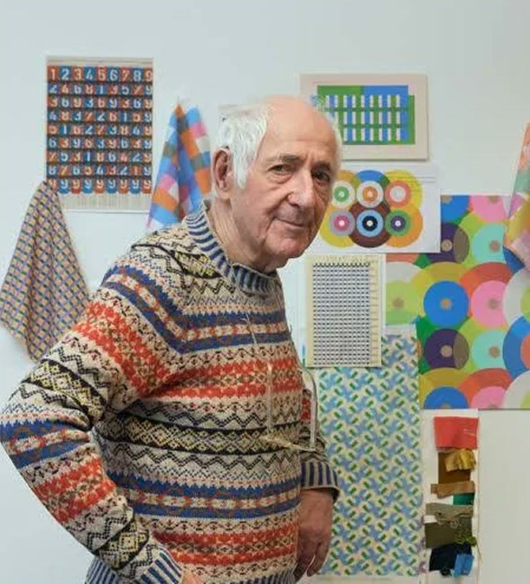
Karel Martens (카럴 마르턴스)
그래픽 디자이너
1939년 네덜란드에서 태어난 그래픽 디자이너이자 예술가다. 타이포그래피, 북디자인, 교육 등 다양한 분야에서 활동해 왔다. 누군가 사용했던 종이 위에 색과 형태를 반복해서 찍어내는 모노프린트 작업으로 잘 알려져 있다. 오래된 기록 위에 새로운 흔적을 쌓으며, 서로 다른 시간과 이미지가 만나 만들어내는 우연한 아름다움을 탐구한다. 그의 작업은 타인의 흔적 위에 자신의 색이 더해지며 새로운 세계가 탄생한다는 전시의 메시지와 맞닿아 있다.
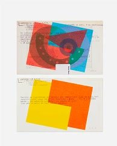
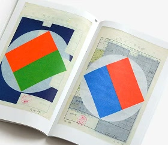
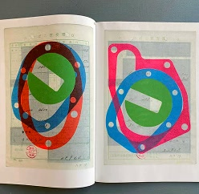
② 서문 · 작가
참여 작가 · 김애란
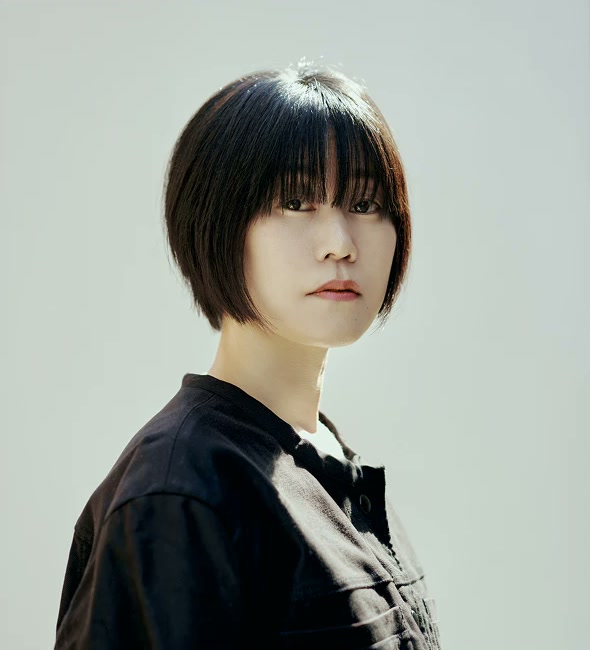
김애란 (Kim Ae-ran)
소설가
1980년생 소설가로, 『두근두근 내 인생』, 『비행운』, 『바깥은 여름』 등을 집필했다. 일상에서 마주하는 사람들의 삶과 감정을 섬세한 언어로 풀어내며, 평범한 순간에 깃든 관계의 의미를 발견한다. 첫 산문집 『잊기 좋은 이름』에서는 자신을 지나온 사람과 풍경, 기억을 돌아보며 지금의 자신을 이루는 수많은 이름을 불러낸다. 타인을 기억하고 이해하는 일이 곧 자신을 이해하는 과정이 될 수 있음을 이야기한다.
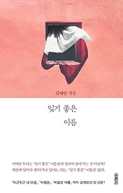
② 서문 · 작가
참여 작가 · 니키 리
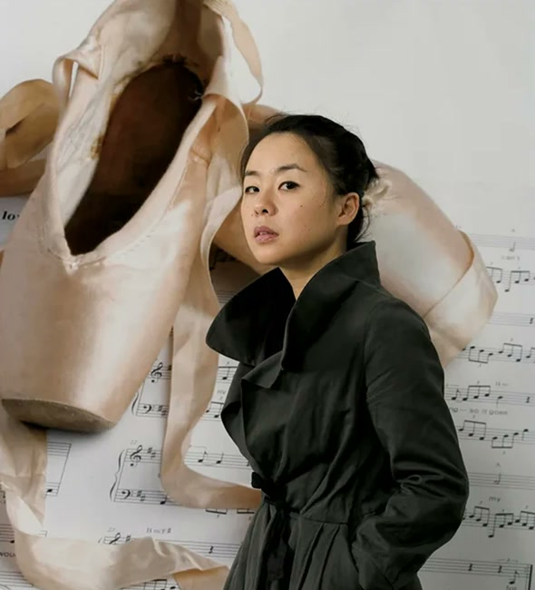
니키 리 (Nikki S. Lee)
사진·퍼포먼스 작가, 영화감독
1970년생 한국 출신의 사진·퍼포먼스 작가이자 영화감독이다. 서로 다른 공동체에 직접 참여하며 자신의 외모와 행동을 변화시키고, 그 모습을 사진으로 기록하는 작업으로 알려져 있다. 대표작 《Projects》와 《Parts》를 통해 개인의 정체성이 고정된 것이 아니라 타인과의 관계 속에서 끊임없이 변화한다는 사실을 탐구한다. 그의 작품은 우리가 누군가와 함께하는 동안 서로의 일부를 받아들이며 이전과는 다른 존재가 되어가는 과정을 보여준다.
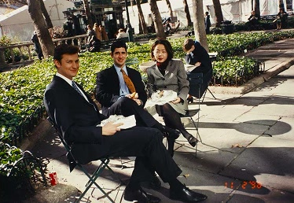
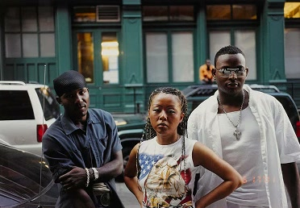
③ 포스터 원고
SAI Museum
of Art
사이미술관 · 두 세계 사이의 공간
전시 기간 · 관람 시간
26.11.05 — 26.12.05
월–금 10:00–18:00
토–일 · 공휴일 10:00–19:00
- 전시 제목
- 연결에 스며든 사랑Sarang Within Connection
- 주최/주관
- 사이미술관SAI Museum of Art
- 전시 일정
- 2026.11.05 ~ 2026.12.05
- 관람 시간
- 월~금요일 10:00 ~ 18:00 (17:00 입장 마감)토~일요일/공휴일 10:00 ~ 19:00 (18:00 입장 마감)
- 티켓
- 현장 구매 (성인 1매 10,000원)
- 참여 작가
- Karel Martens, 김애란, 니키 리
- 장소
- 서울특별시 성동구 왕십리로14길 36 (성수동1가, 프리센스)36, Wangsimni-ro 14-gil, Seongdong-gu, Seoul, Republic of Korea
④ 키워드
두 세계가 만나, 겹치고, 남는다
겹침에서 시작해 영향을 주고받고, 경계를 지닌 채 흔적을 남긴다.
- 01
겹침Overlap/Layer
서로 다른 삶이 만나고 여러 관계가 쌓이며 나의 정체성이 형성된다는 의미
- 02
영향Influence
서로의 말과 행동, 생각이 스며들며 각자의 모습을 변화시킨다는 의미
- 03
경계Boundary
서로에게 스며들면서도 각자의 고유함을 간직한다는 의미
- 04
흔적Trace
관계가 지나간 뒤에도 말투와 습관, 취향 속에 서로의 일부가 남는다는 의미
⑤ 의사결정
주요 의사결정 및 토론 요약
전시의 방향을 정한 기준
- 관객에게 전하고 싶은 메시지가 확실해야 한다.
- 연결, 스밈, 사랑 → 이 세 단어가 보여야한다.
의사소통 방식
- 시간이 오래걸리더라도 기획 부분이 중요하기 때문에 회의를 오래해서 모두가 합의하는 만장일치 제도를 도입한다.
- 그림을 그려가면서 자신의 의견을 설명한다.
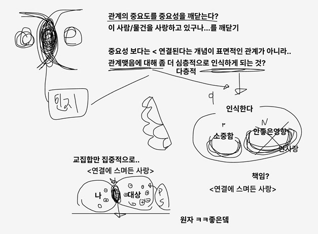
세대간의 연결 (x)
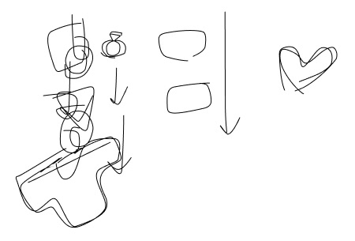
부모님에게 물려받은 말투와 습관, 가치관에는 함께 살아온 시간과 가족만의 문화가 담겨 있습니다. 이러한 모습이 세대를 이어 전해지는 과정을 살펴보며, 그 안에 담긴 사랑을 발견하고자 합니다. 이를 통해 나를 이루는 익숙한 것들이 어디에서 왔고, 다음 세대로 어떻게 이어지는지 생각해봅니다.
→ 서로 이해가 되기 보다는 설명해서 설득해야하는 과정이 길어지면서 좀 더 모두가 이해할 수 있는 주제를 하기로 결정함
연결의 정도
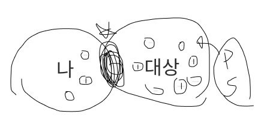
우리는 연결 속에서 서로에게 영향을 주고받으며 서로의 일부가 됩니다. 관계가 깊어질수록 말투와 습관, 생각이 스며들어 이전과 다른 모습으로 변화하지만, 그 안에서도 각자의 고유함은 남아 있습니다. 이처럼 서로에게 스며드는 정도와 각자로 남는 경계를 살펴보며, 사랑이 우리를 어떻게 변화시키는지 탐구합니다.
→ 대화가 가장 깊게 논의되었던 주제였기도 하고 새로운 아이디어가 계속 나와서 재밌게 작업할 수 있을 거라 판단함
연결의 방식 (x)
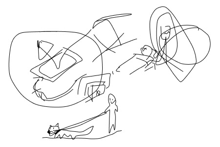
연결의 사전적 의미 중 '물리적·기술적으로 잇는 행위'에 집중해, 일상에서 당연하게 여겼던 연결을 다시 생각해봅니다. 서로 어울리지 않을 것 같은 대상도 뜻밖의 방식으로 이어보면 새로운 쓰임과 의미가 생길 수 있습니다. 이러한 연결을 재치 있게 풀어내며, 관객이 익숙한 관계와 사물을 유쾌하게 바라보도록 합니다.
→ 관객에게 전달하고자 하는 메시지가 명확하지 않았음